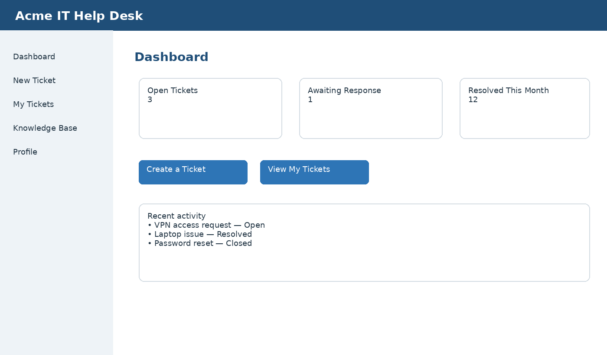

Understand the Dashboard
The dashboard provides quick access to your tickets and common support actions.

Figure 1. IT Help Desk Portal dashboard
Dashboard areas
- Open Tickets shows requests that still require action.
- My Tickets lists requests submitted by you.
- Knowledge Base provides self-service articles.
- Create a Ticket starts a new support request.